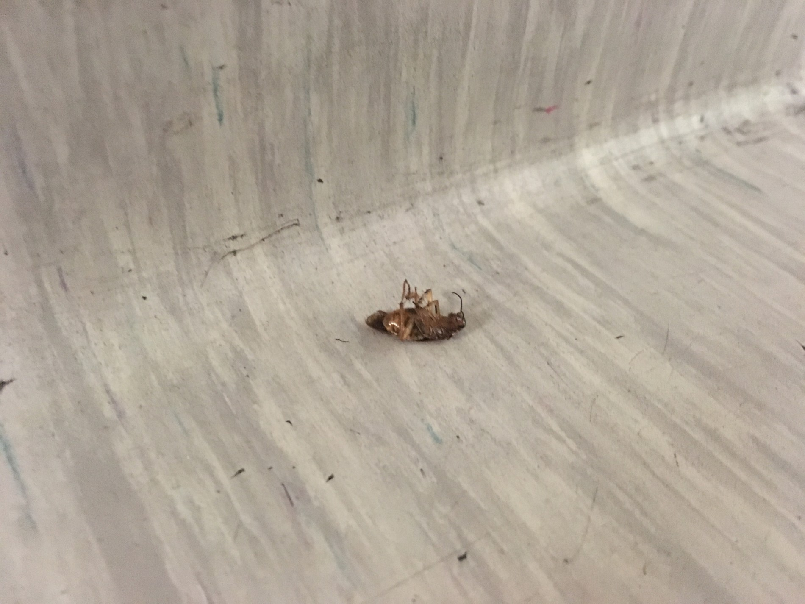
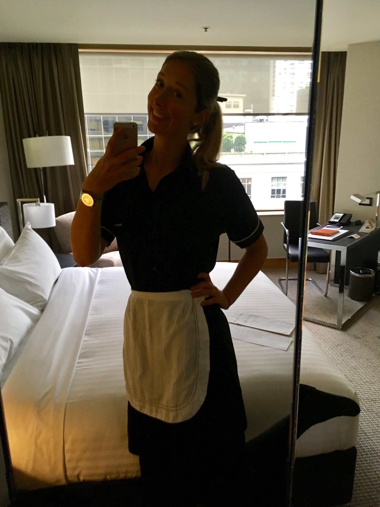
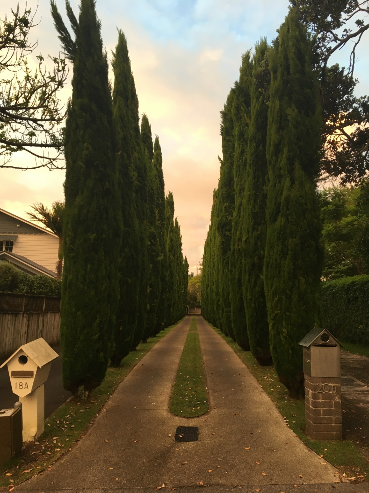
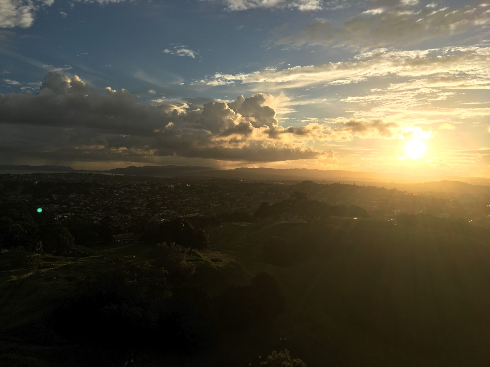
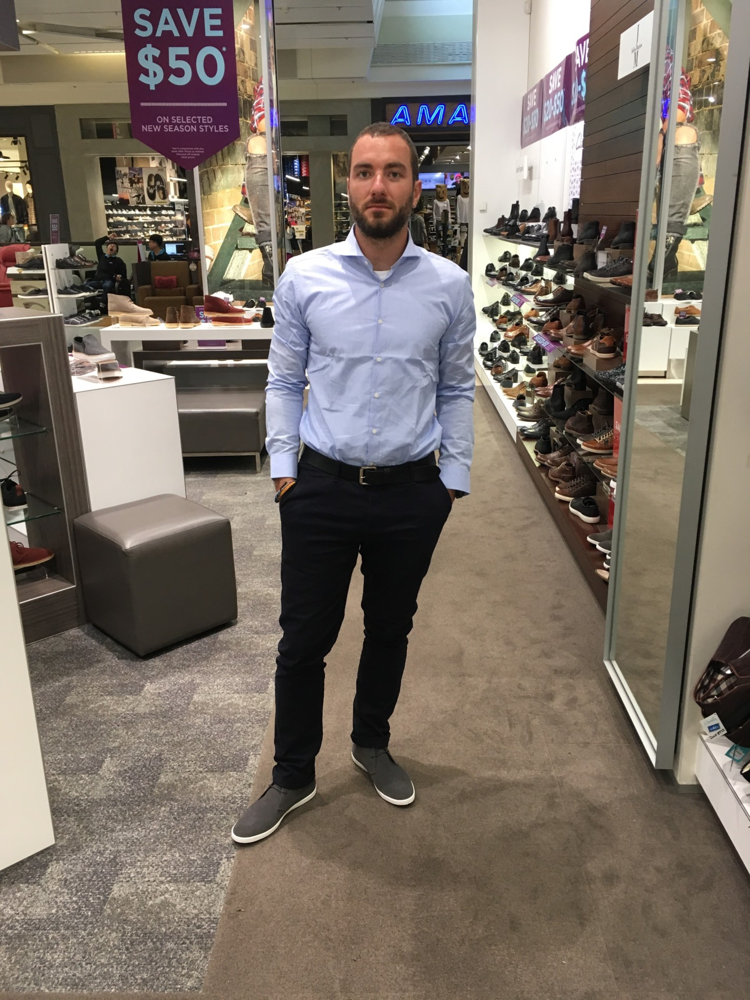
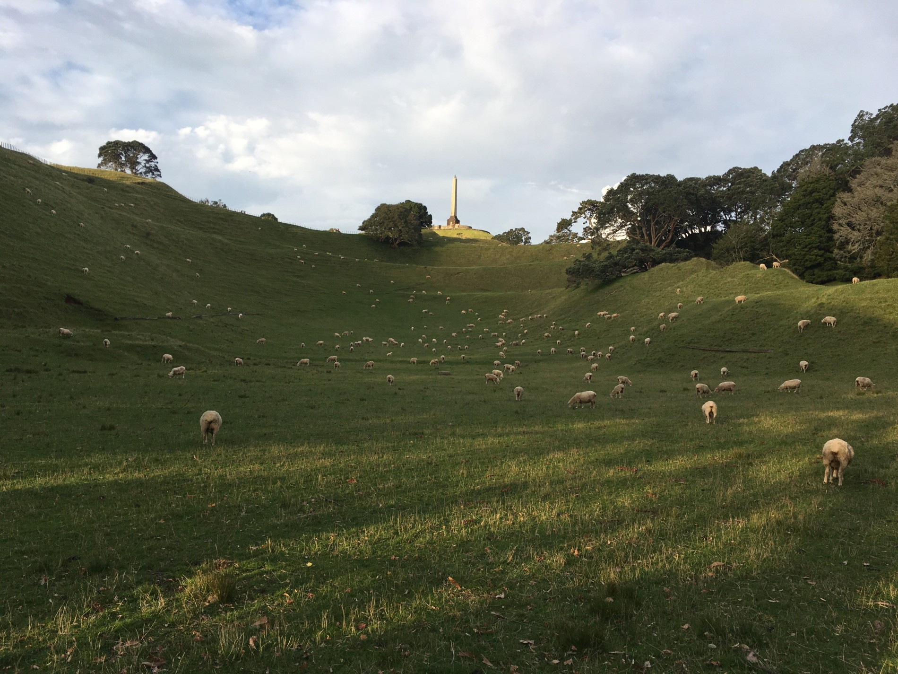
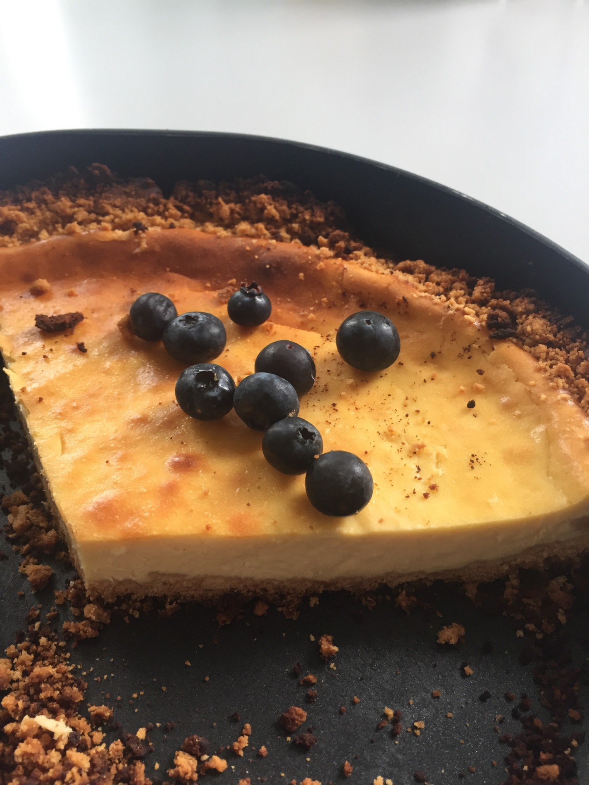

Byla dlouhá pomlka, já vím a omlouvám se. Za to mám pro vás žhavé novinky ze světa pokojských. Opět musím upozornit, že pokud si chcete ponechat alespoň zbytek vzpomínek na princeznovskou Lenu, tenhle příspěvek přeskočte.
Poslední dva týdny jsem dřela jak mezek. Projevuje se to tak, že i když denně pozřu asi tak půl kila čokolády, tak ztrácím na váze…ano, takovej já mám teď výdej 😀
S blechama to taky pokročilo. Ve chvíli, kdy jsem byla pokousaná hodně velkým stylem na krku jsem to chtěla zabalit na místě a prostě už do té práce nejít. Jsem ale bojovník, takže jsem si všechny svoje věci v šatně zabalila do igelitek a v práci jsem si každý den myla hlavu, abych si náhodou nějakou tu malou ludru nedonesla domů. Tenhle týden jsem však došla k velkému zjištění. Blechy jsou i na pokojích pro hosty. V pětihvězdičkovým hotelu uprostřed Aucklandu můžete chytit blechy 😀 A za stížnost, že jste byli pokousáni dostanete celých 37 dolarů slevu 😀 Je to absolutně neuvěřitelný, ale je to tak.
Další zjištění je, že pokud vás budou blechy kousat dostatečně dlouho, tělo si proti tomu dokáže vytvořit imunitu. Štípance se hojí mnohem rychleji a nakonec o nich skoro nevíte. Proto asi bezďákům u nás (v ČR) ty blechy nevadí, už s nimi žijí v harmonii 😀 Další věc je, že od mého poštípání na krku mě nic dalšího nekouslo. Možná mají blechy nějakou hierarchii jako slepice, takže pokud mě teď šťípla nějaká alfa blecha, už jsem ocejchovaná a žádná obyč blecha už si na mě nedovolí. To je moje teorie 😀
Včera jsem zašla za jedním ze šéfíků, abych mu osvětlila, co všechno jim tam nefunguje. Sama jsem se pobavovala nad tím, že jdu do kanceláří mezi všechny ty kravaťáky pěkně ve své uklízecí uniformě a s hadrou nacpanou z boku za tou mojí bílou zástěrou. Šéfík je sympaťák a mimo jiné jsem se dozvěděla, že je z Jihoafrické Republiky, celá jeho rodina žije v Rakousku a má rád Český Krumlov 😀
Jo a ještě k něčemu se musím přiznat, stal se ze mě hroznej dojížděč zákusků. Každej druhej host něco slaví, takže většinou nacházím v pokojích talíře se zákusky s nápisem šťastné narozeniny, šťastné výročí, šťastné líbanky a když tam zbyde i nějakej ten zákusek, tak jsem šťastná i já. Ze začátku jsem se trochu ostýchala a přišlo mi to trochu ekl, ale většinou je to tak pět malých zákusků a jeden až dva zůstávají netknutý. A to je ta chvíle, kdy přijdu já a všechno si to narvu do hlavy 😀 Dva dny zpět jsem měla nejlepší meruňkovou makronku, co jsem kdy jedla. Pán, co slavil narozeniny udělal podle mě velkou chybu, že ji nesnědl 😀
A nesmím zapomenout na speciální odstavec pro Kubu. Už jsem přišla na to, proč má každý host k dispozici papuče. Není to proto, aby mu bylo fajn teplo na nožky, ale proto, že se v koupelně nikdy nevytírají podlahy. Není to tím, že by uklízečky byly líný a nevytíraly je. Nemají to vůbec v popisu práce 😀 nemají na to žádný vybavení, nic. Koupelny se jen vysávají, ale nevytírají. Takže až příště půjdete na hotelu bosky čůrat a budou se vám lepit nožky k podlaze, s největší pravděpodobností je to špatně mířený proud nějakého Číňana, co tam bydlel před váma 😀
Tenhle týden se děly velký věci. Vééélkýý věci. Chvíli jsem zvažovala, zda to sem opravdu napsat, jelikož je to dosti potupné, takže kdo si mě chce pamatovat tak, jak mě zná z dřívějška, tedy jako roztomilou princeznu, tak prosím nečtěte dále 😀
Začalo ti divným štípancem na ruce. Komár, říkám si. Jenže pak se objevilo štípanců víc a víc….a byly v řadě. To mojí milí, může znamenat pouze dvě věci. Štěnice nebo blechy. Štěnice byly ihned vyloučeny, jelikož štěnice mě kousla loni na Hip Hop kempu ve stanu, takže s touhle havětí již mám zkušenost. Nene, byla to blecha. Vygradovalo to ve chvíli, kdy jsem se škrábala jako blázen po nohách ve svých sloníkových kalhotech a vyplašeně křičela na Maru, že mám v kalhotách určitě blechu a co mám dělat. Stáhla jsem je rychlostí světla a zavřela do igeliťáku do karantény. Co to má jako znamenat? Blecha? Odkud? Z práce, z bytu nebo z autobusu? No totální dno. Připadala jsem si jako největší póvl. Na Maru takhle havěť nejde, jelikož má podle mě nějaký speciální venkovský geny, který tuhle havěť prostě nepřitahujou. Dva dny se mi tak trochu vysmíval a večer mi dával pusu na dobrou noc se slovy: „Tak dobrou noc….a ať tě blechy štípou celou noc.“
Když jsem ve čtvrtek došla do práce, vyzbrojená obřím červeným sprejem proti hmyzu, který vypadá jako hasičák, čekalo mě další překvapení. Po cestě na záchod v dámských převlíkárnách leze po zemi šváb. Podívám se nevěřícně na švába (který mě měl dost na háku a pochodoval si v klidu dál), pak na Lenku (moji kolegyni), na švába a na Lenku a ptám se: „Ehm, já jen, tohle je šváb, ne? To tady normálně takhle bydlí?“ Lenka mi s naprostým klidem oznámila, že ti tam bydlí ve velkým a jestli mě pohoršuje tenhle jeden statečnej, tak ať radši neotvírám přilehlou komoru, protože tam mě čeká švábí invaze. Nevěřícně jsem na ni koukala, jestli to myslí vážně. Podívala se na mě takovým lítostným pohledem a říká:“ No to ti ani nebudu říkat, co dál tady můžeš objevit za zvířata.“ To já už ale dávno věděla, jaký zvířata můžu objevit, jen jsem nevěděla jistě, odkud se objevují. Tak jsem jí oznámila, že vím, že myslí blechy, že mám na sobě sto pět štípanců a v kabelce malý protibleší hasičák. V tu chvíli mi osvětlila celou situaci. Mají tam problémy s blechama už měsíce, nikdo s tím nic nedělá a holkám, co tam očividně připluly na loďce někde ze Samoy z pralesa, to nevadí. Ona, ještě s jednou českou kolegyní, si stěžovali už několikrát, ale řekli jim akorát to, ať si převlečou uniformu a podívají se, jestli to netahají náhodou ony z domu. No vřela mi krev v žilách, to si asi dokážete představit. Běžela jsem za personální a zeptala se jí, jestli opravdu věděla o problému s blechama a nijak mě na to neupozornila. Řekla mi, že přece nemůže jednotlivý zaměstnance upozorňovat po jednom. Zeptala jsem se, jestli to myslí vážně. Po jednom nás poučovala o tom, jak máme chodit po schodech a držet se zábradlí, ale zrovna tohle jí nepřišlo důležitý? Vysvětlila jsem jí, že to takhle teda nenechám. Pak jsem běžela za svojí nadřízenou a řekla jí to samé. Ta na mě začala zkoušet, jestli je nepřináším z domu, tak jsem jí řekla, ať tohle na mě vůbec nezkouší, že už to zkoušela na dvě kolegyně přede mnou, a že to by musela být opravdu velká náhoda, abychom to všechny tahaly z domu do práce. No v minutě jsem se stala nejproblémovějším zaměstnancem v hotelu a nikdo už mě nemá rád 😀 Každopádně se věci daly do pohybu, protože za půl hodiny už páni manažeři kontrolovali dámský šatny, tak jsem se octla i tam a osvětlila situaci, aby se s tím začalo rychle něco dít. Teď přemýšlím, zda to hnát někam dál….třeba je zažalovat nebo vydírat nebo to dát do zpráv 😀
Tak jen abyste věděli, jak to chodí v těch pětihvězdičkových hotelech 🙂 a teď další dobrá rada pro všechny (speciálně pro Kubu Halvu). Na každým pokoji bývají skleničky a hrnečky. Než je použijete, radši si je trochu umyjte. Každá pokojská totiž vezme použitou skleničku, opláchne ji v koupelně jen vodou a rukama, a pak ji utře použitou hadrou na prach 😀 To já ale nedělám, nejsem prase. Já vezmu čistý ručník a utřu skleničky do něj. Takový ten malý ručník, víte…jak se používá na obličej 😀
Jinak se mi osud teď vysmívá stejně jako Mara, takže když jsem si pustila seriál, návez onoho dílu byl Akrobat a blecha. Když jsem si pustila můj denní výber hudby na Spotify, první píseň byla Catch my disease (chyť moji nemoc). Zábava, že?
Teď mám dva dny volno, takže si půjdu za odměnu koupit něco na sebe a budu zase šťastná jako blecha 😀
Tady už je švábík na zádech, protože byl poskříkán hasičákem
Už jsou to dva týdny, co jsme se usídlili v Aucklandu. A mám pro vás novinku 🙂
Jelikož jsme finančně dost vykrváceli a po minulém týdnu zjistili, že najít práci pro Maru nebude ze dne na den, domluvili jsme se, že si najdu co nejrychleji dočasnou práci, páč někdo musí nosit chleba na stůl 😀 V neděli večer jsem rozeslala několik životopisů a hned v pondělí ráno mi volali, jestli mám zájem o práci pokojské v hotelu Stamford v centru města. Nastoupila bych hned a jednalo by se jen o výpomoc, a tak nevadí, že tam budu jen pár týdnů. Ideálka. Za tři hoďky jsem byla na pohovoru a další den už jsem pracovala. Rychlý proces. Takže teď dělám pokojskou v hotelu. Doufám, že seš na mě pyšnej, táto 😀
V úterý jsem vyfasovala uniformu, koupila punčocháče, černý baleríny a šla se zaučit. Zaškolovala jsem se s jednou kočenou z Chile. Z mojí ne zcela perfektní angličtiny se rázem stala top angličtina na úrovni, jelikož půlka pokojských umí pět základních anglických vět a druhá půlka se tak nějak domluví. Gabriela z Chille byla unesená z toho, že je Stamford pětihvězdičkový hotel a řekla mi, že jsme teď pětihvězdičkový pokojský, což bude vypadat super v životopisu a máme teď otevřený dveře do světa. Nejzábavnější na tom je, že to ta holka myslela fakt vážně.
Na fotce je můj první pokoj, který jsem uklízela sama, takže jsem se v něm slavnostně vyfotila. Umím teď stlát postele líp než Kristýnina máma a mám otevřený dveře do světa 😀 Dělám si samozřejmě srandu….nikdo neumí stlát postele jako Kristýnina máma 😀
Jinak je to pěkně namáhavá práce, po pěti dnech mám úplně zlomený záda a myslím, že by mi měli platit i noční směny, protože uklízím i ve spánku. Do práce to mám přes hodinu busem, takže jak jste již asi pochopili, můj život se teď obrátil dost k horšímu 😀 Tak si všichni dáme tichou modlitbu za to, aby si Mara rychle něco našel a já si mohla v klidu najít něco jinýho, kde sice taky dostanu minimálku, ale nesedřou mě tam z kůže jako tady. Nebo v lepším případě ať si můžu doma sedět na gauči a vařit si kafíčka 😀
No a nakonec vám dám jednu dobrou radu. Až budete jednou takhle ubytovaní v pětihvězdičkovým hotelu, budete si chtít osvěžit obličej vodou a utřít si ho do malého ručníčku na obličej, který je na to určen, nedělejte to, je dost vysoká šance, že nějaký host před vámi si do něj vytřel zadek. Ano, opravdu je tomu tak 😀
Se mi ty dvě vysoký školy pomalu začínaj vyplácet 😀
Proč bychom sem měli psát každej den? Sorry jako. 🙂
Ale popravdě to teď uplně nebylo naší prioritou. Navíc jsme opustili cestovatelský režim a pozvolna přešli zpátky do reálného života. A je to teda drsný.
Z města Rotorua jsme jeli tou nejpřímější cestou do Aucklandu. Bylo tam po cestě ještě pár zajímavostí, ale protože byla předpověď počasí naprd, tak jsme si řekli, že se tam někdy vrátíme z Aucklandu o víkendu. Je to pod dvě hodiny cesty.
Na první dvě noci v největším městě NZ nám přístřešek poskytl Ondra. Tímto ještě jednou velice děkujem 🙂 Měli jsme tak šanci promyslet, jak přesně chcem na začátku postupovat. Vyšlo nám z toho, že než si najdem práci, tak by to chtělo levnější ubytování. Dočasně tak bydlíme kus za městem (20min autem, 1hod busem do centra) u Číňana přes airbnb. Klasickej barák okupujeme s dalšíma dvěma párama. Aspoň mi má kdo dělat společnost při večeři, když Lena zevlí v posteli na skypu nebo u seriálů.
A co ty práce? No já si hledam pozici Java Developer – vlastně to, co jsem dělal v Praze. A protože se toho nebojim, hledam seniorní pozici. Jakože jsem hodně zkušenej a dobrej v tom, co dělam. Tak uvidíme, jestli to klapne 🙂
Jinak je to podobný jak v Česku. Jsou tu dva typy možnosti spolupráce. Buď jako contractor (naše OSVČ) nebo klasickej zaměstnanec. A jako u nás, contractor bere daleko víc a je placenej od hodiny. Navíc jsou tu kontrakty fixní (většinou s možností prodloužení) na 3 nebo 6 měsíců. Takže pro mě ideálka, jestli se budeme vracet do ČR. Na druhou stranu kontraktorských pozic neni tolik. Třeba každá desátá. Takže tomu dam ještě tak tejden nebo dva a pokud se nezadaří, tak bych začal zkoušet i ty zaměstnanecký pozice. Akorát tam je to komplikovanější. Jednak si myslim, že se uplně firmy nepohrnou do nabírání blázna, co se nejspíš za půl roku vytratí. Dále mi vízum zakazuje mít permanentní pozici, takže bych si musel domluvit, aby mi na jinak permanentní smlouvu dali datum ukončení spolupráce. A nebo by mi museli zasponzorovat pracovní vízum. No je to legrace 🙂
A jsem z toho hledání trochu nešťastnej, protože tu pracujou hodně s AWS nebo hledaj Full Stack Developery, jakože k Javě hledaj i AngularJS nebo React v jednom. Moc tomudle přístupu nerozumim, ale je to tak. Což mě teda trochu diskvalifikuje, protože ani s jednim moc zkušeností nemam. AWS jsem se rozhodl dohnat, tak se teď učim na AWS Solutions Architect certifikaci. Abych se při tom čekání na pohovory moc nenudil. A pak začnu dohánět i ten frontend. Tak proto bylo psaní příspěvků odsunuto na druhou kolej.
No a Lenka si zatim hledá cokoliv poblíž, kde teď bydlíme. Protože plán je takovej, že já si najdu práci, pak si poblíž mý práce najdem bydlení a pak si Lenka najde něco v okolí.
No tak co ještě bych vám pověděl? Včera (1. 4.) tu byl významný den. Měl jsem narozeniny 😀 Lenka o mě celý den pečovala (více než obvykle). K obědu mi uvařila mojí oblíbenou rajskou omáčku, jako dezert pak upekla cheesecake. A dostal jsem kokosový olej, takže jsem si mohl vychutnat moc příjemnou masáž 🙂 A já si včera dopřál hned tři sprchy! A 10km běh k tomu.
Zajímavý, jaký všechny věci člověk bere za samozřejmý. Po 4 měsících strávených v autě si na našem airbnb moc užíváme:
na záchod (hlavně v dešti) se nemusí ven ke stromku
člověk si může kdykoliv dopřát (teplou) sprchu
nemusí se řešit, jak moc je nabitej notebook nebo powerbanka
stabilní wifi internet
lednice chladí sama od sebe a nemusí se do ní tak kupovat zmražený potraviny nebo chlazený pivko, aby udržela teplotu – narozdíl od našeho chladícího boxu
no a vlastní pračka taky neni uplně k zahození 🙂
Tak zas někdy příště 😉
Kam to asi vede? #nofilterKdyž já chodim po meet upech, abych návazal kontakty kvůli práci, Lenka mezitim zevlí v parku a fotí takovýhle nádhery.Na pohovory to chtělo trochu lepší oblečeníPark nedaleko od Ondrovo bytu. Dost v centru města.Pohled na downtown cestou z jednoho pohovoru.Zbytek narozeninového cheesecake. Rajskou vyfocenou nemam, ta byla hned snězená 🙂
Vydali jsme se na další zvířecí farmu. Pravidelný čtenář si již jistě povšiml, že se nějak podezřele často vyskytujeme na těchto místech. A není tomu náhodou. Lenka by si totiž po návratu do ČR chtěla také založit zvířecí farmu, kde by si dětičky z Brna mohly pohladit a pochovat různá domací zvířata. Že prej to je její celoživotní sen. A kdo jsem já, abych jí po jejích snech šlapal, že? Takže se snažíme navštívit každou farmu v okolí, abychom načerpali inspiraci 🙂 A jaká že byla tahle farma?
Velkou výhodou Lilliput Farm Fun & Animal Park bylo množství stromů na jejich pozemku. Ty tak poskytovaly příjemný stín jak pro nás, tak pro zvířata. Dále potom jednoduchá okružní cesta, po které se šlo a člověk tak viděl všechna zvířata a nemusel moc řešit, kudy se má vlastně vydat. Ze zvířat nás nejvíce bavil chlupatej bílošedivej oslík a bílej papoušek. Ten si natažením pařátku vynutil svezení na ruce a vůbec se mu nechtělo zpátky na bidýlko. Musela nás zachránit majitelka farmy a ptáka zpátky nalákat na křupku 🙂 Uplně nejlepší bylo, že se papouch nechal hladit. A měl radši chlapy než ženský. A neměl rád děti. Prostě správnej charakter 🙂 Sympatický taky bylo malý prasátko, který se připojilo k člověku na začátku farmy a celý okruh nám dělalo společnost.
Při opouštění farmy jsme si všimli letáku s farmou s čerstvým mlékem. Takže vám může být hned jasné, kam se následně ubírala naše cesta 🙂 Lenka opět podojila automat o litr lahodného čerstvého mléka a ještě k tomu jsme pokecali se zjevně se nudícím farmářem.
Dále jsme navštívili Huka Falls. Cizím obrázkem níže si ušetřím 1000 slov. V brožuře psali, že prej tudy za 11 vteřin proteče jeden olympiskej stadion. Moc si to teda nedovedu představit, když vezmem šatny a tribuny a parkoviště a bůhví co ještě. Ale tak asi to bude pravda, když to tam píšou.
Ne, nepořídili jsme si drona. Je to cizí obrázekPohled z mostu nahoruPohled z mostu doluUplně dolePovinná selfie fotka
Následovala návštěva Craters Of The Moon. Za malý poplatek si člověk mohl projít asi hodinovou cestu jakoby měsíční krajinou se spousty kouřícími krátery. Ptáte se, proč kouří? Mezi městy Taupo a Rotorua se nachází aktivní geotermální půda, takže skoro každá škvíra tady vypouští páru se silným sirným zápachem (asi jako zkažený vejce). Je tu také spoustu teplých (až horkých) pramenů, řek, vodopádů, gejzírů a různých bublajících (vařících) jezírek.
Smrdí, smrdí to to smrdí
Po kráterech se Lenka dočkala vytoužené sprchy. Už jsem vypozoroval, že po pár dnech bez možnosti si umejt hlavu se Lenka začne jakoby měnit 😀 A člověk pak moc nechce bejt poblíž té nové Lenky 😀 Každopádně sprcha byla pouze kraťoučká, protože jsme jednak museli mazat na další atrakci a druhak byla veřejná placená, takže tekla přesně 4 minuty. Výborná příležitost trénovat pozitivní myšlení. Takže se mi Lenka vrátila ze sprchy celá usměvavá, protože byla moc ráda za tu skvělou a jedinečnou příležitost si umejt hlavu a vůbec vlastně nenadávala a nebyla nasraná, že ta sprcha byla moc krátká a že pak slíbená studená voda už netekla a že nestihla tohle a tamto. Dobře no, bylo to přesně opačně 😀
Pospíchali jsme, protože přesně ve čtyři hodiny odpoledne nechaj na chvilku protejkat místní vodní elektrárnu. Díky tomu má člověk možnost vidět, jak se skalnatý kaňon postupně zaplňuje vodou až do divoké řeky.
Před, 16:00Po, 16:05
Tím bylo město Taupo vyčerpáno a pokračovali jsme severním směrem. Cestou jsme potkali bazének s teplou vyvěrající vodou jménem Butchers Pool (řezníkovo bazén). Pamatujete, jak jsem mluvil o tý geotermální aktivitě, že? Tak tady si to obetonovali a udělali tak z toho takový veřejný neplacený lázničky 🙂 Voda ale byla dost špinavá, tak jsme si pouze ocachtali nohy.
řezníkův bazének
Další zastávkou byla Hot’n’Cold řeka. Velice zajímavý úkaz, kde se spojují dva prameny. Jeden je studený a druhý horký. Díky tomu si koupající se člověk v soutoku může jednoduše „nastavit“ tu správnou teplotu. Super relax zadarmíko místečko. No já tam byl naprosto v zenu. Lenka o trochu méně 😀 Protože si po ohrožení života amébou v minulých minerálních lázních vypěstovala fóbii na teplou minerální vodu obsahující tuhle měňavku. Naštěstí se po chvilce uvolnila a oba jsme si tak mohli užít tohle skvělý místečko.
Docela nabitý den, co? Začalo se stmívat a my našli útočiště na jednom opuštěném parkovišti. Zelený trávníček vedle auta nás ještě vyzval k cvičení, po kterém jsme upadnuli do postele (nebo co to v tom autě vlastně máme).
Středa
Po probuzení jsme zkontrolovali Mud Pool, který se nacházel hned u našeho parkoviště. Velké bahnité jezírko, které nepřetržitě bublá a vydáva roztomilé zvuky. Nějakym zvláštním způsobem je pro mě pozorování bublajícícho bahna stejně uspokojivé jako sledování vodopádu.
Mud Pool
Následovala procházka na vrcholek Rainbow Mountain. Bylo to naplánované tak, abychom nahoru dorazili kousek před 10:15, protože v tento čas se uměle aktivuje (nasypání mýdla) jeden z velkých gejzírů o kousek vedle v placeném parku. Bohužel jsme žádný gejzír neviděli :-/ Alespoň jsme na druhé straně kopce spatřili úchvatně vypadající kopečkovitou krajinu.
Po obědě jsme dorazili do města Rotorua. Nejdříve jsme se prošli po místním sekvojovém lese. Zastavili jsme se na vyhlídce, odkud byl vidět další gejzír. Ten měl vrcholit jednou až dvakrát za hodinu. Když jsme tam dorazili, tak gejzír trošku prskal. Tak že si na tu erupci počkáme. Po hodině čekání gejzír přestal frčet uplně. V tu chvíli jsme si uvědomili, že celou tu dobu jsme vlastně koukali na to nejlepší, co ten gejzír dovede. No nevadí.
Vlevo jemně stříkající – hlavně čoudící – gejzír
Z knižního průvodce Rough Guide (díky Kartičovi s Veru za skvělý dárek 🙂 ) jsme se dozvěděli, že místní ptáci nemusí sedět na vejcích. Proč? No přece protože je zdejší půda díky geotermální aktivitě tak teplá 🙂 A teď tuhle blbost už nikdy nezapomenete 😉 Jo a ty sekvoje tu rustou třikrát rychleji než v jejich domovské Californii. Toliko asi k naučným zajímavostem.
Vodní hladina vypadající jako sklo
S autem zaparkovaným docela v centru města jsme šli obhlídnout okolí. Nejdříve zahrady. Jak jinak než plné sirných smradlavých bublajících jezírek. V centru města jsme si dali boží točené pivko s ještě skvělejšíma křídlama. Musíme se přece za to bydlení v autě taky někdy trochu rozmazlit 🙂 Potom jsme zabrousili do dalšího parku, kde jsme objevili bazénky s teplou vodou hluboké tak akorát na ponoření nohou. Jenom škoda, že byly obklopené heštegama, áčkama nebo prostě asiatama. I tak jsme se vmáčkli a chvilku dali již docela uchozeným nohou odpočinout v teplé smradlavé lázni.
Mňam
Po parku jsme se již začli vracet zpátky k autu. Posledním zajímavým místem byla původní maorská vesnice. Dnes už vlastně takové menší chudší předměstí. Ze skoro každého kanálu se tu line všudypřítomná sirná pára. Opravdu celé město smrdí po zkažených vejcích. V průvodci tvrdili, že si na to člověk po chvíli zvykne. NE! Neni tomu tak 🙂


{kind=link}
{kind=link}
{kind=link}
{kind=link}
{kind=link}
{kind=link}
{kind=link}